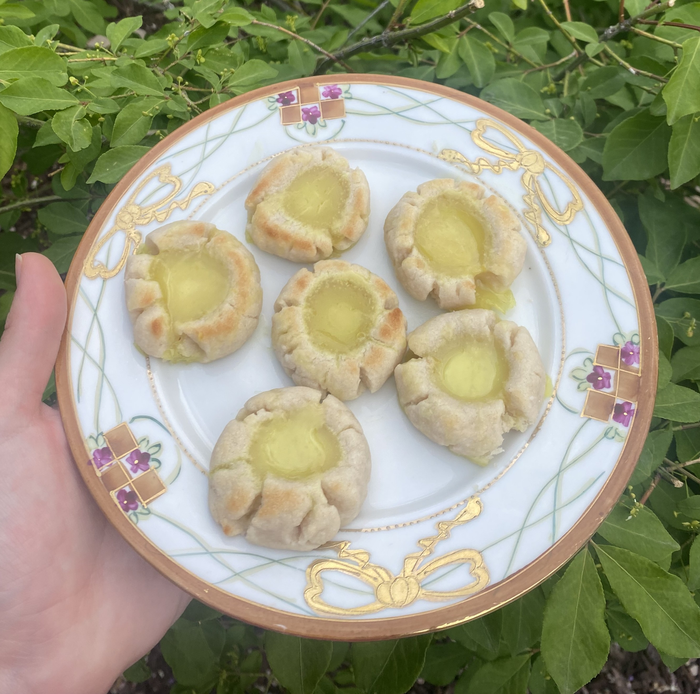

Ingredients
- ¼ cup plant milk
- ¼ cup lemon juice
- 1 tbsp lemon zest
- ¼ cup granulated sugar
- ¼ cup cornstarch
- ¼ cup tapioca starch
- 2 tbsp vegan butter
- ¼ tsp turmeric
- ¼ cup to ½ cup vegan sour cream or yogurt
Instructions
- Add all ingredients, except sour cream/yogurt, to a pot over medium heat. Whisk frequently until the mixture thickens.
- Remove from the heat and mix in the sour cream/yogurt. Chill in the fridge for at least 1 hour.
- Note: This is delicious in thumbprint cookies or on pancakes with strawberries.